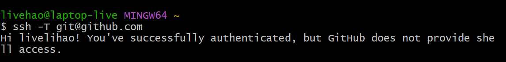
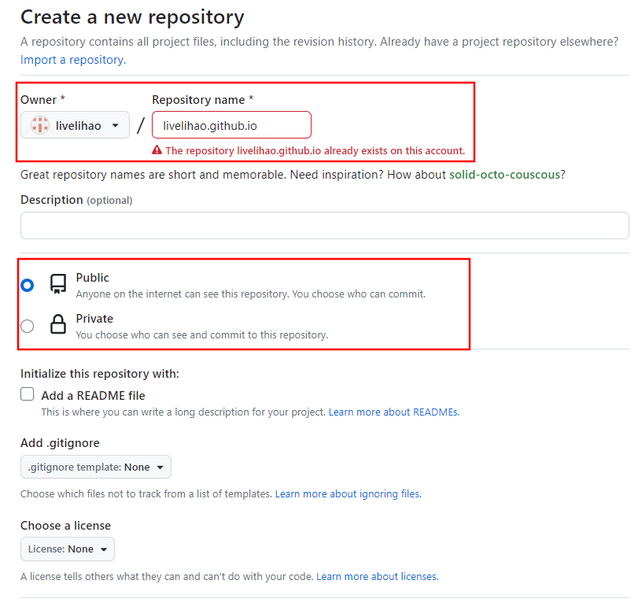

Hexo 经验分享(1) | 初识 Hexo 和相关配置
Hexo 是一个基于 Node.js 的静态博客搭建框架，可以让你使用 Markdown 语言来写作，并将 Markdown 文本转换为静态网页，以便于发布到服务器上.
在本文中，我将基于 Hexo 和 Github 服务器部署的方式，总结 Hexo 配置过程，帮助你轻松地搭建一个漂亮、高效的个人博客网站.
软件安装
安装 Node.js 和 Git
在使用 Hexo 之前，你需要安装 Node.js 和 Git. Node.js 是 Hexo 的运行环境，Git 则是用来将博客推送到远程服务器上的工具.
推荐安装 Node.js 长期维护版
完成安装后，使用下面的命令行测试. 若得到程序版本号，则安装成功.1
2
3node -v
npm -v
git -version
安装 Hexo
打开命令行终端，输入命令 npm install -g hexo-cli 安装 Hexo. 同样地，输入 hexo -v 测试安装是否成功.
创建一个文件夹用于存储博客的目录，在当前目录下打开命令行，运行命令 hexo init " 初始化 Hexo 博客文件. 输入 npm install 安装组件.
本地服务器测试 Hexo
- 输入命令
hexo generate或者hexo g，生成静态网页，在存储博客的目录中出现public文件夹. - 输入命令
hexo server或者hexo s，在本地启动 web 服务器. 在浏览器中访问 http://localhost:4000 来查看博客.
Github 设置
创建账户和密匙
使用邮箱注册 Github 账户.
打开之前安装的 Git Bash, 设置用户名和邮箱1
2git config --global user.name "GitHub 用户名"
git config --global user.email "GitHub 邮箱"
创建SSH密匙
- 在 Git Bash 中输入
ssh-keygen -t rsa -C "GitHub 邮箱", 一路回车. - 进入 [C:\Users\用户名.ssh] 目录（要勾选显示“隐藏的项目”），用记事本打开公钥 id_rsa.pub 文件并复制里面的内容.
- 在 GitHub 的 Settings 页面，选择 SSH and GPG keys，点击 New SSH key.
- 自定义 Title ，粘贴复制的 id_rsa.pub 内容到 Key 中，点击 Add SSH key 完成添加.
验证连接
打开 Git Bash，输入 ssh -T git@github.com，出现 Hi xxx! You’ve successfully…… 即可.

创建 Github Pages 仓库
创建一个新的 Github 仓库，需要注意两个地方.
- 仓库命名为
用户名.github.io，用户名.github.io也是我们后面访问博客的地址； - 选择仓库可见， 勾选
Public； - 点击
Create repository创建.

Github 部署
使用命令 npm install hexo-deployer-git --save 安装 hexo-deployer-git 插件.
打开存储博客的目录，修改 _config.yml 文件（推荐使用 vscode），在最后一行 deploy: 修改为下面的内容.1
2
3
4deploy:
type: git
repo: https://github.com/用户名/用户名.github.io.git
branch: 分支名
Hexo 使用
- 使用命令
hexo new "文章标题"发布新文章. - 使用命令
hexo clean清除public文件夹内容. - 使用命令
hexo g重新生成public文件夹. - 使用命令
hexo s本地服务器部署和查看. - 使用命令
hexo deploy或者hexo d在 Github 上部署.
输入 https://用户名.github.io 远程访问博客.
常见问题
- 开启 HTTPS 后访问网站显示连接不安全？
证书还未部署生效，等待一会儿，清除浏览器缓存再试。
- Mac 安装 Hexo 报错无法安装
Mac 用户需要管理员权限运行，使用
sudo npm install -g hexo-cli命令安装。 - npm 下载速度慢，甚至完全没反应
可以更换 npm 源为国内 npm 镜像。
也可以在 npm 安装命令后面加上：--registry https://registry.npm.taobao.org - Github上的界面和本地预览的不一样
清除浏览器的缓存，或者等待一段时间后重新刷新网页
总结
至此，我们已经成功地基于 Hexo 搭建了个人博客网站。对于需要拥有自己个人博客的人来说，Hexo 绝对是一个非常友好的工具。
它易于使用、快速、灵活，同时在开源环境下，还拥有着丰富的主题和插件库，可以让你轻松地找到符合自己需求的主题和插件，个性化地定制自己的博客。
本人水平有限，如有错误，望及时指出，谢谢！